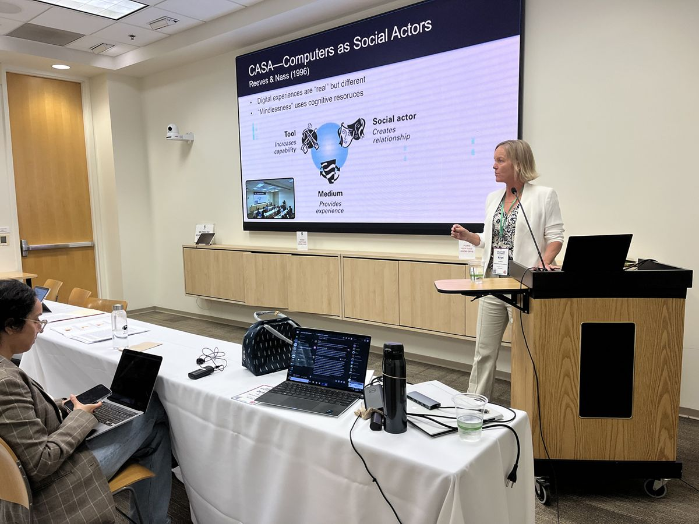
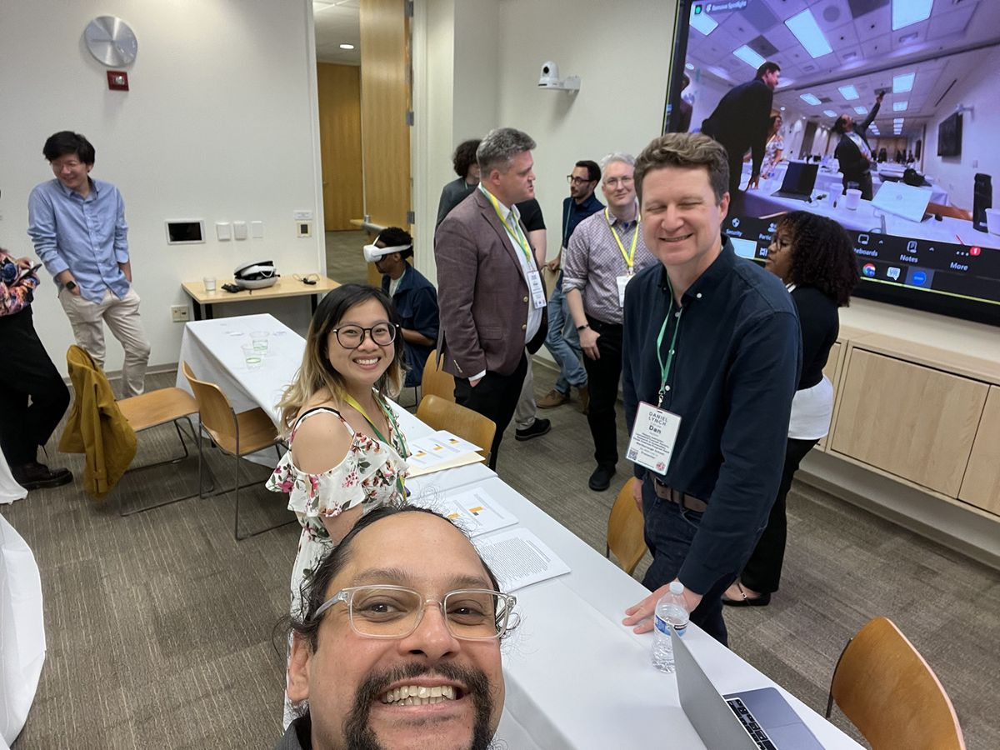
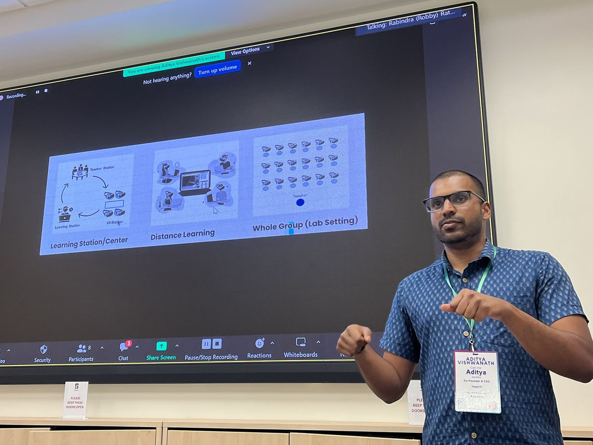
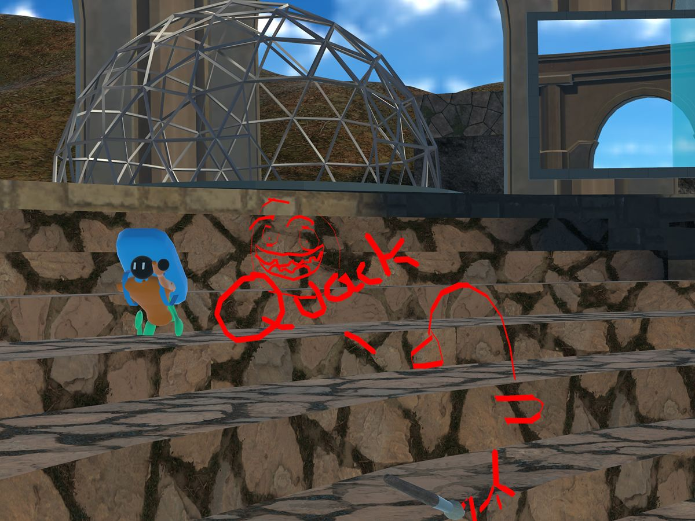
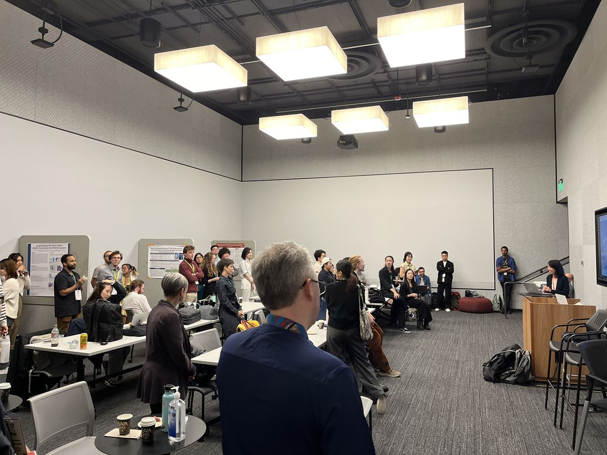
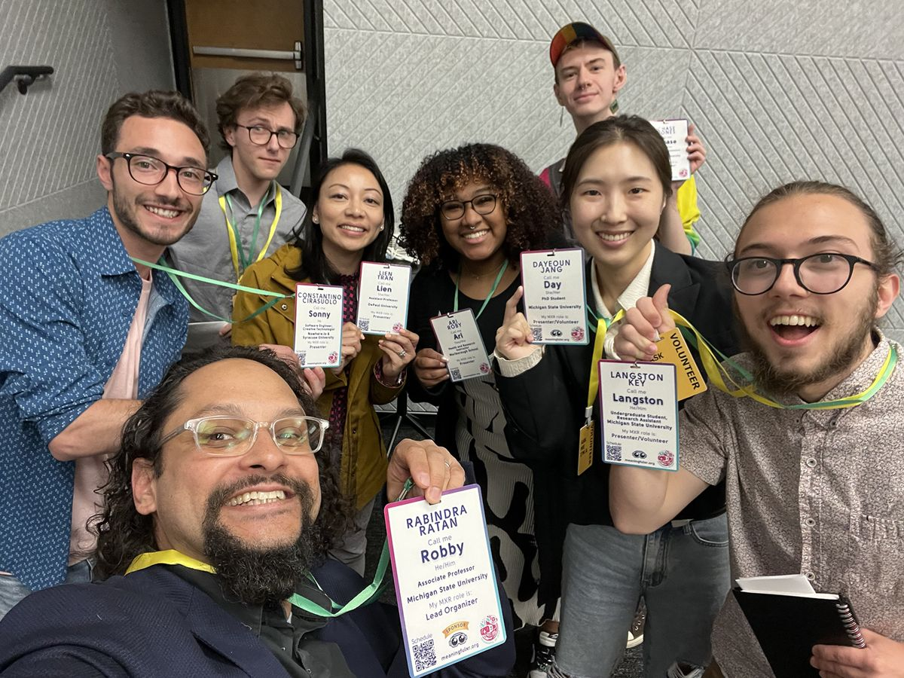

The fourth conference
May 20 to 22, 2027
At Syracuse University, with remote attendance through the platform in VRChat. The call for papers, registration, and program are on the conference site.
Go to the conference sitePast years
2026
Portland, May 30 to 31
Held at the University of Oregon Portland campus and online, with 96 presentations from more than 200 contributing authors. Remote attendees joined in VRChat.
2025
UC Davis, May 22 to 23
Held at the UC Davis International Center and online, with keynotes, research sessions, demos, and social events. UC Davis hosted, with support from the SPARTIE Lab, SIUE, and Stanford's Virtual Human Interaction Lab.
2024
Stanford, May
The first conference brought nearly 90 scholars and creators from more than 30 institutions together for two and a half days, in person and in VR.
Sponsors including Stanford, MSU, the Journal of Media Psychology, and the NSF funded travel scholarships for 18 students. Selected papers were invited into the Journal of Media Psychology special issue.
Stanford and VRChat, May 2024






Where the conference comes from
Meaningful Play
The Meaningful Play conference at Michigan State University has run since 2008, and Meaningful XR takes its emphasis on meaningful application from it.
SPARTIE Lab
The lab at Michigan State University where much of the organizing and the student scholarship coordination originates.
Beyond Meet Space
Our collective provides the remote attendance. Remote participants present and attend through the platform in VRChat.